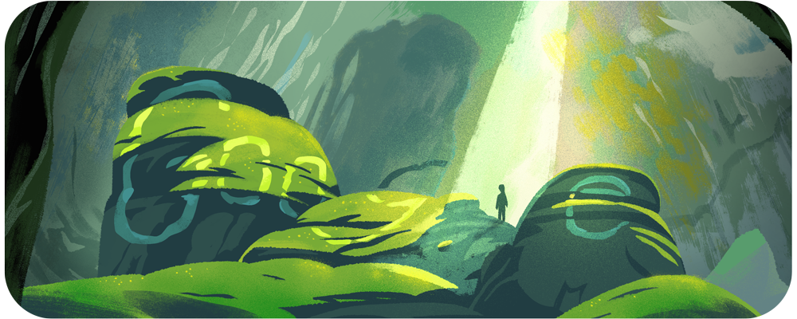

Doodles, as spontaneous and delightful changes to the Google logo, have evolved to celebrate a myriad of themes, including cultural heroes, historical events, and global holidays. With over 5,000 Doodles created, each rich in cultural context and creativity. In this post, I explore whether LLMs can truly grasp these complex combinations of words and cultural nuances using iamge to text. The model is new release GPT4.o.
I have chosen 8 doodles from Google Doodles website, each belongs to topic given in doodles library, namely: Arts, Culture & Society, Games, Geography, Holidays, Natural World, Science, and Sports.
prompt= See this picture and tell me: 1. what is this doodle google about 2. guess what is it celebrating; 3. guess the date
Art
The Doodle Giorgio Gaber’s 83rd Birthday launched Jan 25, 2022.
Today’s Doodle celebrates the 83rd birthday of Italian singer-songwriter, playwright, and performer Giorgio Gaber. He is best known and remembered as a pioneer of teatro canzone (theater song), a reflection of Milanese society captured through the fusion of music, poetry, and theater.
Born into a musical family in Milan, Italy on this day in 1939, Giorgio Gaberscik first developed a love for music while playing the guitar as therapy for a hand injury. He later learned to sing, and in his early twenties, Gaber co-produced Italy’s first rock ’n’ roll song—Ciao ti dirò (“Ciao, I will tell you”). During the 1960s, Gaber primarily performed on television, where his purposeful and entertaining songwriting enraptured audiences by intelligently engaging with Milan’s changing cultural landscape.
In 1969, he released Com’è bella la città (How Beautiful the City Is), which remains among his best known works for its focus on contemporary social concerns. To establish a more personal connection with audiences, Gaber transitioned almost exclusively to the theater stage in 1970. His emotional and complex theatrical performances examined Italian society and encouraged an introspective national dialogue.
Over the next 30 years, Gaber refined the teatro canzone medium with hundreds of shows per year. This monumental oeuvre demonstrated that music, monologues, and comedy were tools to expand one’s emotional limits while reflecting on shared national realities. In honor of Gaber’s contributions, a historical Milanese opera house was reopened under his name as the Teatro Lirico Giorgio Gaber in 2003.
::: 1. This Google Doodle features a stylized portrait of a man, a vinyl record, and a microphone.
It appears to be celebrating a musician or a singer-songwriter, potentially commemorating their birthday, an anniversary of a significant album release, or their influence on the music industry.
Given the vintage style and elements, it might be honoring an artist from the mid-20th century. Based on these visual clues, a possible date for the celebration could be related to the artist’s birth or the release of a notable work.
:::
judgement
Q1 & Q2 correct, Q3 wrong.
Culture & Society
The Doodle 151st Anniversary of The Metropolitan Museum of Art launched Apr 13, 2021. In honor of a storied legacy of cultural enrichment for New Yorkers and international communities alike, today’s Doodle celebrates the 151st Anniversary of the Metropolitan Museum of Art.
The Metropolitan Museum of Art was founded in 1870 by a group of American citizens—businessmen and financiers as well as leading artists and thinkers of the day—who wanted to create a museum to bring art and art education to the American people. On this day in 1870, the museum was officially incorporated and soon after acquired its first work of art: a Roman sarcophagus.
The Met has come quite a long way from that first showing to become New York’s largest art museum, with a permanent collection of over 1.5 million objects, spanning over 5,000 years from nearly every corner of the globe. A sampling of the many works of art found at The Met today are depicted in today’s Doodle artwork—including a Byzantine floor mosaic from 500-550 A.D., the armor of German Emperor Ferdinand I from the 16th century, an intricate traditional Lakota/Teton Sioux beaded dress, and the painting “Self-Portrait” by Samuel Joseph Brown, Jr. from the 1940s.
Whether you’re a Met regular or planning your first trip to the Museum, be sure to visit a certain blue ceramic hippopotamus from Egypt’s Middle Kingdom nicknamed “William.” An unofficial mascot of The Met, he might soon become your favorite part of the collection.
Happy anniversary to The Met–and here’s to many more!
::: 1. This Google Doodle features a variety of artistic and historical artifacts, all tied to a large building complex.
It seems to be celebrating the history and collection of a major museum, showcasing its diverse exhibits from different cultures and time periods.
Given the detailed representation of the building, it could be honoring an anniversary or a significant event related to the museum, such as its founding date or the opening of a new exhibit. A possible date could be related to the founding of a renowned museum like the Metropolitan Museum of Art, which was established on April 13, 1870.
:::
judgement
Q1 Q2 Q3 correct! amazing!!!!
Games
The Doodle 100th Anniversary of the Crossword Puzzle launched Dec 21, 2013.
::: 1. This Google Doodle resembles a crossword puzzle grid with the word “Google” spelled out in the style of crossword answers.
It is likely celebrating the anniversary of the creation of the crossword puzzle, honoring its significance in popular culture and its enduring popularity as a pastime.
The original crossword puzzle was published on December 21, 1913, in the New York World. Therefore, this Doodle could be celebrating that specific date, possibly marking a milestone anniversary like the centennial celebration in 2013.
::: ### judgement Q1 Q2 Q3 correct! amazing!!!!
Geography
The Doodle Celebrating the Alishan Forest Railway launched Mar 10, 2018. Imagine riding a train chugging along through a lush and misty forest. On your journey, you pass orchards of exotic fruits, taro fields, waterfalls, and soaring trees over a thousand years old….
This dream is a reality if you’re on board the Alishan Forest Railway, which makes its way through the Alishan National Forest, situated in the heart of Taiwan. Today’s Doodle celebrates the landmark on what is known as kickoff day for the Alishan “Cherry Blossom Season”. Starting today, numerous visitors will take the forest rail up to the mountains to enjoy the beautiful cherry blossoms of Alishan.
The train travels from Chiayi (a city on the west coast) to Fenchihu (a village high in the mountains), which takes about 2.5 hours. The Alishan Forest Railway is one of the Five Wonders of Alishan, and has even been proposed as a possible World Heritage Site.
Built in 1912, the railway’s original purpose was transporting timber out of the vast forest. Today, it whisks travelers along a scenic journey up to 2216 meters above sea level, traversing narrow zigzagging paths. Unique switchback tracks allow the train to move both forwards and backwards to climb especially steep mountain terrain. Along the route lies Zhaoping Park, one of the best spots for taking in cherry blossoms, particularly now and throughout the springtime season.
::: 1. This Google Doodle features a red train traveling through a scenic landscape with blooming cherry blossoms, set against a mountainous backdrop.
It is likely celebrating a famous train route or a significant railway system known for its picturesque journeys, possibly in Japan given the cherry blossoms.
A specific date for this celebration could be tied to the anniversary of the opening of the train route or a special event related to it. If this is the Alishan Forest Railway in Taiwan, the date could be related to its original opening in 1912 or a related festival.
::: ### judgement Q1 Q2 Q3 correct! amazing!!!!
Holidays
::: 1. This Google Doodle features two carved pumpkins as the “O’s” in “Google,” with a spider web attached to the “e.”
It is celebrating Halloween, a holiday traditionally marked by activities such as trick-or-treating, costume parties, and pumpkin carving.
The date for this celebration is October 31st, which is when Halloween is celebrated annually.
::: ### judgement Q1 Q2 Q3 correct! amazing!!!!
Natural World
The Doodle Celebrating Sơn Đoòng Cave launched Apr 14, 2022. Nestled deep within the remote jungles of central Vietnam’s Phong Nha-Kẻ Bàng National Park, a UNESCO world heritage site, lies a natural phenomenon unparalleled by any other on Earth: the gargantuan Sơn Đoòng Cave. Today’s Doodle celebrates this colossal cavern, which was officially discovered on this day in 2009.
Expert geologists estimate the Sơn Đoòng (Vietnamese for “Mountain River”) Cave was formed sometime between two to five million years ago—epochs before local farmer Ho Khanh inadvertently stumbled upon its enormous entrance in 1990. The cave remained untouched until 2008, when Khanh retraced his steps to its misty opening, and until 2009 alongside Howard and Deb Limbert of the British Cave Research Association. The intrepid speleologists conducted the cave’s first official survey and concluded that it was the largest cave on the planet.
Inside Sơn Đoòng’s undisturbed inner chambers (big enough to fit an entire city block of 40-story buildings!), scientists discovered a wealth of record-breaking geological formations including the world’s largest limestone pearls and tallest stalagmite. Giant sinkholes situated further into the cave’s depths allow for sunlight and rain to nourish two pristine jungle ecosystems, which are home to flying foxes, the world’s only monkeys to live underground, and eyeless white fish. One of these thriving rainforests is so vast, it even has its own localized weather system!
In 2019, a trio of British divers proved there was still more to discover after finding an underwater tunnel connecting Sơn Đoòng to another cave—tacking on another 5.6 million cubic feet to its already titanic volume of 1.35 billion cubic feet.
Here’s to a natural wonder for everyone’s travel bucket list! 
::: 1. This Google Doodle shows a lush, green landscape with a person standing among large, moss-covered rocks, illuminated by sunlight.
It appears to be celebrating the beauty and significance of nature, possibly a specific natural site or a notable environmental event.
Given the focus on nature, it might be commemorating Earth Day, celebrated annually on April 22, which highlights the importance of environmental protection and conservation.
::: ### judgement Q1 Q2 correct! Q3 wrong but pretty make sense.
Science
The Doodle Christian Doppler’s 214th Birthday launched Nov 29, 2017. When a fire engine approaches, the siren gets louder as it comes closer, taxing your eardrums as it whizzes past, and fades into the distance. What causes this difference in volume?
The answer was proposed by Austrian mathematician and physicist Christian Doppler in 1842 in a phenomenon since documented as the Doppler Effect, a concept that applies to both sound and light, in addition to other phenomena.
Simply put, sound is generated in ‘waves.’ As the source of such waves moves closer, the waves themselves take less time to reach you. They hit you with increasing frequency, making the sound more intense. As the source moves away, the waves start to spread out, and the sound becomes weaker.
The Doppler effect also explains why stars in the sky appear to be of different colors. As a star approaches the earth, wavelengths compress and the star appears to be bluer in color. If the converse happens and a star is moving away from us, it appears redder.
Though the Doppler Effect is his most famous contribution to scientific literature, Christian Doppler authored over fifty works in mathematics, physics, and astronomy over the course of a twenty year teaching career that spanned modern day Austria, the Czech Republic, and Hungary.
Today’s Doodle by guest artist Max Löffler celebrates Christian Doppler’s 214th birthday. It shows Doppler in Salzburg, his native city, holding an airplane as it creates a Doppler effect.
Alles Gute zum Geburtstag, Herr Doppler!
::: 1. This Google Doodle depicts a person holding a small airplane model, with a cityscape in the background and concentric circles emanating from the plane.
It is likely celebrating a significant figure in aviation or aerospace engineering, possibly someone who made notable contributions to the field of flight or radio technology.
A potential date for this celebration could be related to the birth or significant achievement of an aviation pioneer. Considering the artistic style, it might be honoring a historical figure like Guglielmo Marconi, who was born on April 25, 1874, and is known for his work in long-distance radio transmission.
::: ### judgement Completely wrong. It seems to see the waves as radio.
sport
The Doodle Rugby World Cup 2019 Final launched Nov 01, 2019. Today’s Doodle celebrates the Rugby World Cup Final between England and South Africa, which kicks off today inside Japan’s largest stadium, the International Stadium Yokohama.
After a culmination of five weeks of emotional Rugby World Cup play, today’s matchup between the two top-ranked teams in the world is a historic honor for each. Meeting again in the final round of the Cup for the first time since 2007, only one team will return home the 2019 Champions! Who will it be?
Best of luck to both teams!
::: 1. This Google Doodle features a rugby scrum, with players in white and green jerseys forming a characteristic formation.
It is celebrating the sport of rugby, likely in honor of a major event or tournament such as the Rugby World Cup or a significant moment in rugby history.
A specific date for this celebration could coincide with the start of the Rugby World Cup or an important match. For instance, the Rugby World Cup often starts in September and runs through October, so it might be around these months.
::: ### judgement Q1 Q2 correct! Q3 wrong but pretty make sense.
In conclusion, it is amazingly good, especially in scenery detecting but not good at guessing people.